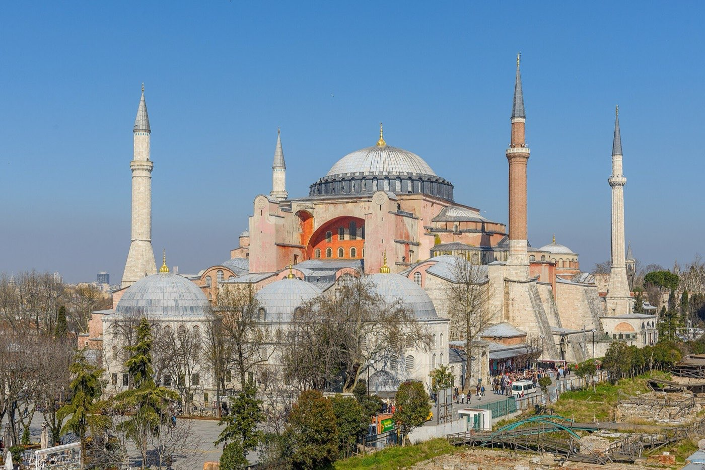
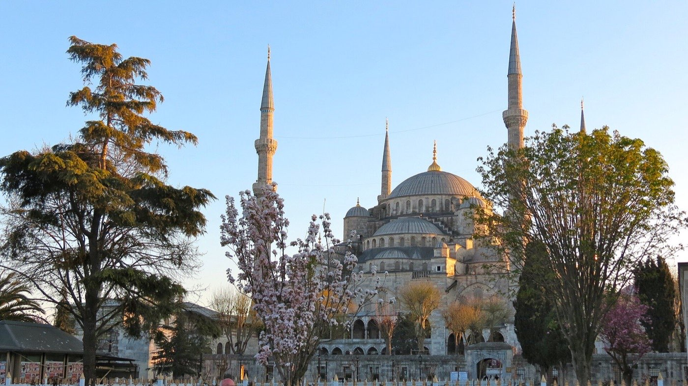
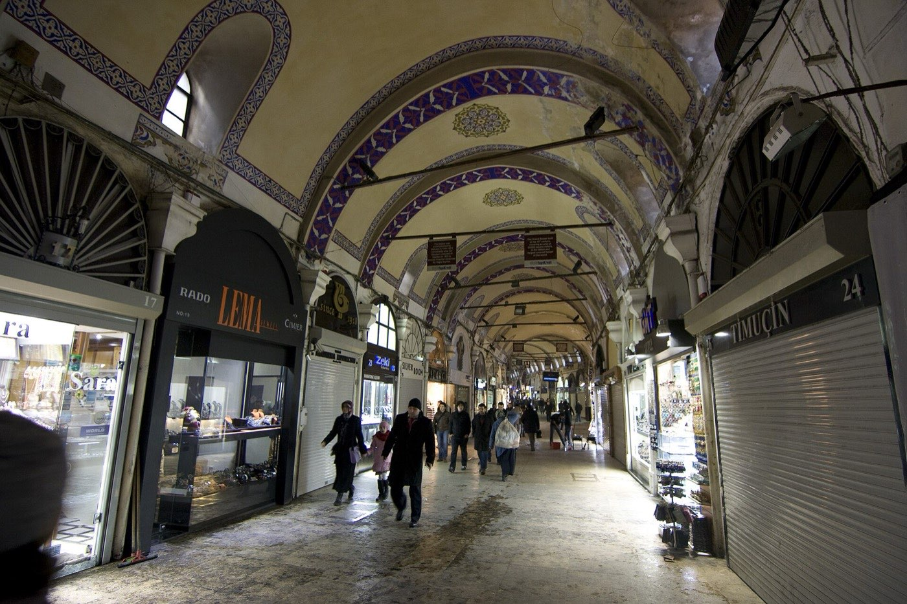
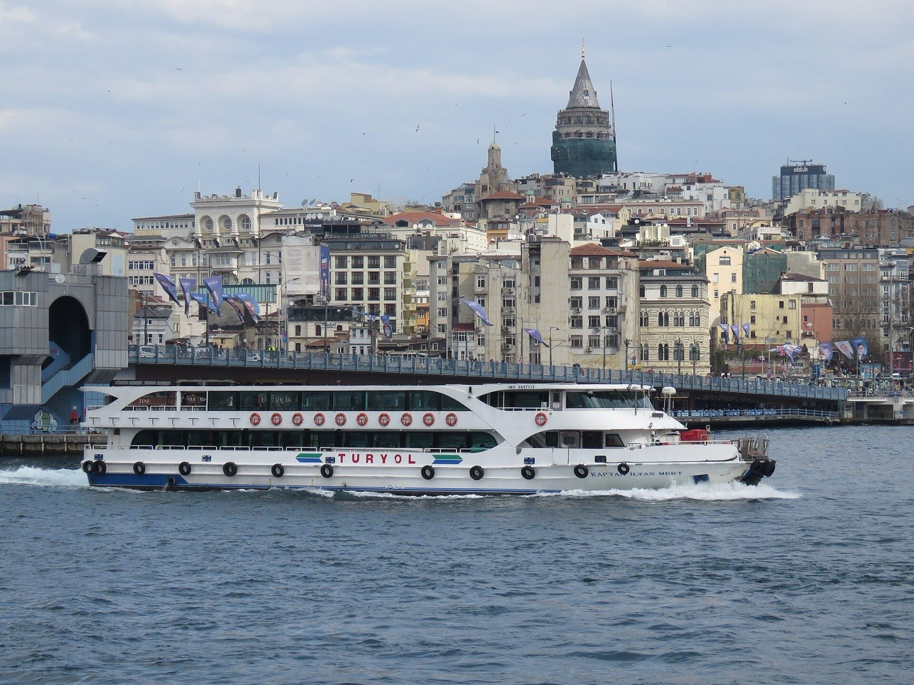

Istanbul · 3 days
3 Days in Istanbul: What You Actually Have to See
Three days is enough for Istanbul's essentials, but only if you build the plan around the closures. Here is what genuinely has to be on the list, ordered so you never walk up to a locked door.

Three days covers Istanbul's essentials comfortably: the two great mosques and the cistern in Sultanahmet, Topkapi and the bazaars, and Galata with a ferry across to the Asian side. What it does not cover is the Bosphorus villages or the Princes' Islands, both of which need a full day and are the things most three-day itineraries wrongly try to squeeze in.
Almost nothing here is far from anything else. Sultanahmet is walkable end to end, and the tram covers the rest. What ruins days in Istanbul is not distance. It is arriving at a door that is shut, and the city shuts a lot of doors on a schedule most itineraries ignore.
Check which weekdays your trip covers before you fix anything. Topkapi Palace closes on Tuesdays. The Grand Bazaar closes on Sundays. Hagia Sophia and the Blue Mosque are working mosques and stop admitting visitors at each of the five daily prayers, with the long closure around midday on Friday. Fit the plan to those holes first and fill in the rest afterwards.
Day 1 — Sultanahmet and the prayer clock
Hagia Sophia and the Blue Mosque face each other across a park, about two minutes apart. Both stop admitting visitors while prayers are held, and not at quite the same moments. So the move is simple. Get there early, go into whichever one is open, and cross to the other afterwards.
Know what you are buying at Hagia Sophia. Since it returned to use as a mosque, foreign visitors are routed to the upper gallery on a paid ticket rather than walking the main floor. It is still worth it for the mosaics and the scale of the dome, but arrive expecting a gallery visit. The Blue Mosque, across the park, is free.
Dress for it and you will not be stopped. Shoulders and knees covered, for everyone, and a headscarf for women. Shoes come off at the door of a working mosque. Scarves are usually available at the entrance, but bringing your own saves a queue.

The must-sees
All within a few minutes of each other. The order depends on which mosque is admitting visitors when you arrive.
Day 2 — Topkapi, Suleymaniye and the bazaars
This is the day with two closures in it, so it moves if it has to. Topkapi shuts on Tuesdays and the Grand Bazaar shuts on Sundays. If your middle day lands on either, swap this with Day 3 and nothing else changes.
Topkapi is large and easy to underestimate. Give it a full morning, and buy the Harem as well, which is a separate ticket and the part most worth the extra. Last admission falls earlier than the closing time, so an afternoon arrival is a bad plan even on an open day.
Between the palace and the bazaar, stop at Suleymaniye. It is Sinan's masterpiece, it sits on a terrace with the best open view over the Golden Horn, and it carries a fraction of the crowd that Sultanahmet does. Most three-day lists leave it out, which is their mistake.

The must-sees
Not a Tuesday, and not a Sunday. Everything below runs gently downhill towards the water.
Day 3 — Galata, Beyoglu and the ferry to Asia
Cross the Golden Horn. Galata and Beyoglu are the nineteenth-century city, steeper and denser than Sultanahmet, and the walk up from the bridge to the tower is the sharpest climb of the trip.
Then get on a ferry. A public Sehir Hatlari ferry to Kadikoy or Uskudar takes an Istanbulkart tap, runs on a published timetable, and crosses exactly the same water as the cruise boats selling tickets on the quay. There is no commentary and no complimentary tea, which is the entire difference in exchange for a fraction of the price.

The must-sees
Uphill first, then the water. Save the crossing for the end of the afternoon and come back into the sunset.
If your three days include a Tuesday, Sunday or Friday
| Day | What is shut | What to do instead |
|---|---|---|
| Tuesday | Topkapi Palace | Move the palace day. Do Suleymaniye and the bazaars instead |
| Sunday | Grand Bazaar | The Spice Bazaar is open. Swap the bazaar day for Galata |
| Friday | Both mosques, around midday | See them at opening, or leave them until mid-afternoon |
| Any day | Both mosques, five times | Prayer closures are short. Walk the Hippodrome and come back |
What to prioritise if you lose a day
| Sight | Skippable? | Why |
|---|---|---|
| Hagia Sophia | No | Nothing else in the city is close to it |
| Blue Mosque | No | Free, and two minutes from the last one |
| Suleymaniye | No | The better mosque and the better view, at a fraction of the crowd |
| Topkapi Palace | Half of it | Courtyards and Harem yes; the queue for the treasury, not always |
| Basilica Cistern | If unbooked | A short visit behind a long queue unless you bought ahead |
| Grand Bazaar | Yes | Impressive roof, relentless sales pitch underneath it |
| Galata Tower | Outside only | You get the same view free from the ferry |
| Bosphorus dinner cruise | Yes | A public ferry crosses the same water for a bus fare |
What three days does not cover
Cutting deliberately beats rushing. These need more time than you have:
- The Bosphorus villages — Ortakoy, Bebek and the fortress up the strait are a full day on the water.
- The Princes' Islands — a ferry each way and a car-free afternoon. Worth it, and not on this trip.
- Dolmabahce Palace — a half day, and a completely different century from Topkapi.
- The Chora church — the finest Byzantine mosaics in the city, and awkwardly far out west.
- The Asian side beyond Kadikoy — Moda, Uskudar and the coast road deserve their own morning.
Common questions about 3 days in Istanbul
Is 3 days enough for Istanbul?
For the essentials, yes. Three days covers Sultanahmet, Topkapi and the bazaars, and Galata with a ferry to the Asian side. It is not enough to add the Bosphorus villages or the Princes' Islands, each of which needs a day of its own.
What are the must-see sights in Istanbul?
Hagia Sophia, the Blue Mosque, Topkapi Palace and the Grand Bazaar are the four nobody should miss. Suleymaniye Mosque is the strongest addition after those, and it is quieter and better sited than anything in Sultanahmet.
Which days are things closed in Istanbul?
Topkapi Palace closes on Tuesdays and the Grand Bazaar closes on Sundays. The Spice Bazaar and the Basilica Cistern open daily. Hagia Sophia and the Blue Mosque are working mosques that pause visits at each of the five daily prayers, with the longest closure around midday on Friday.
Can you visit Hagia Sophia and the Blue Mosque on the same day?
Easily. They face each other across a park about two minutes apart. Because each stops admitting visitors at its own prayer times, go early and start with whichever is open, then cross to the other. Avoid the middle of Friday for both.
What should I wear to visit the mosques?
Shoulders and knees covered, for men and women, plus a headscarf for women. Shoes come off at the door. Scarves are usually available at the entrance, though bringing your own avoids another queue.
Is a Bosphorus cruise worth it?
Not the ticketed kind, on a three-day trip. A public ferry to Kadikoy or Uskudar costs an Istanbulkart tap and crosses the same water with the same views. What you lose is the narration and the tea; what you save is most of the afternoon and most of the money.
How do you get around Istanbul?
Trams and ferries, both on an Istanbulkart. The T1 tram runs through Sultanahmet and over the Galata Bridge, which covers most of this itinerary, and the ferries handle the crossings. Buy the card at any station machine and top it up as you go.
Tailored to your trip
Travelling to Istanbul? Plan your trip around your real arrival and departure times.
Download iOS App